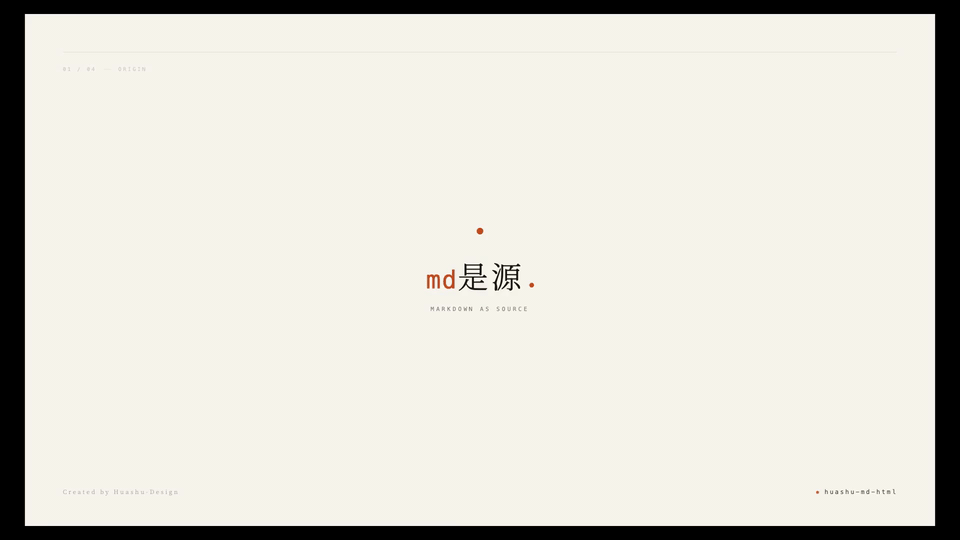
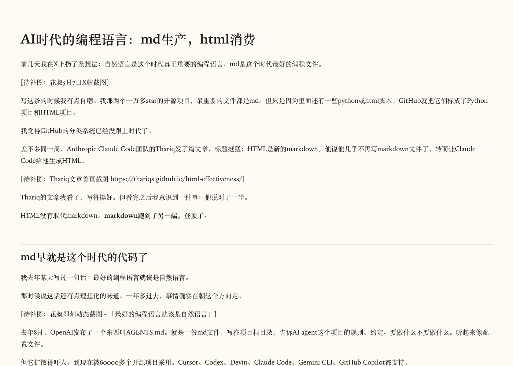
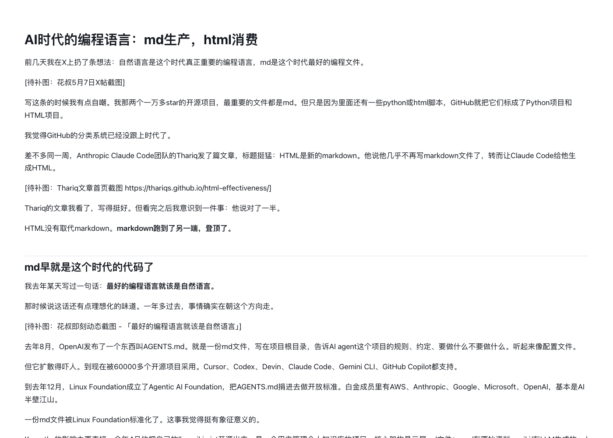
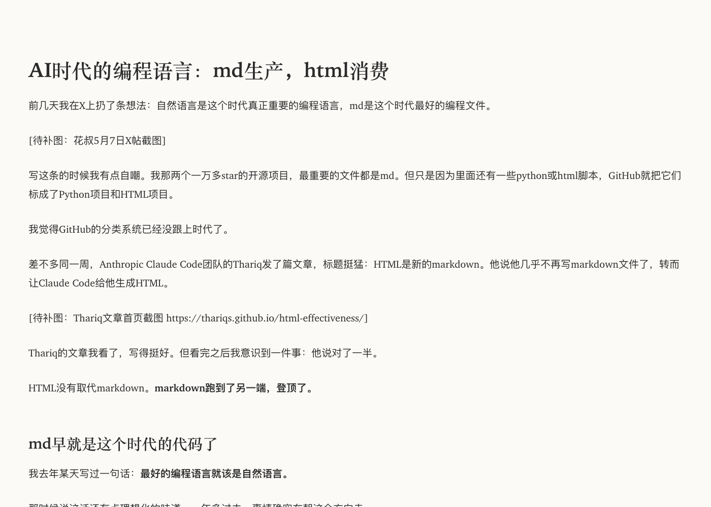
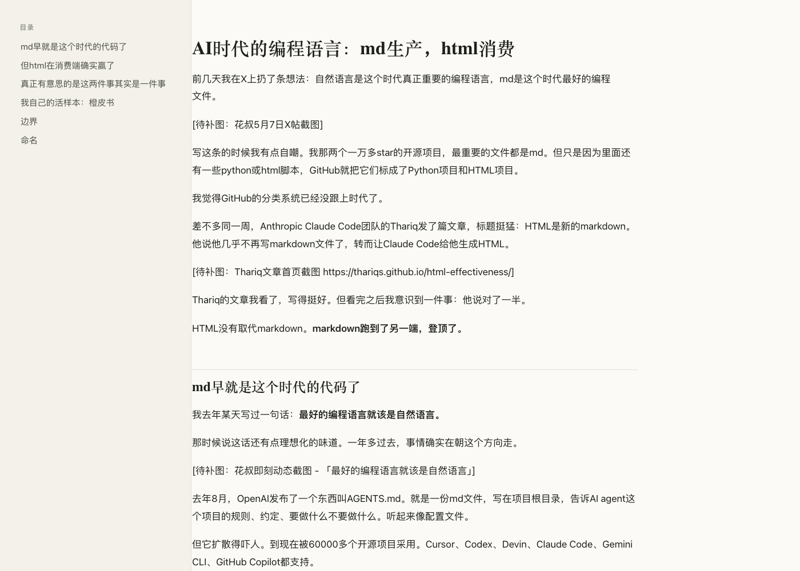

PAGE
大 32 开（176×240 mm）或 A4
把任意文件（PDF / DOCX / PPTX / XLSX / EPUB / 图片 / 音频 / YouTube / 网页 URL）转成干净的 markdown； 再用 4 套精挑过的主题加工成出色的 html；或反过来把已发布的 html 拉回来归档； 需要给出版社/编辑/投稿系统时——一条命令把 md 加工成出版社级 docx，自动嵌图、加封面、做目录、配页眉页脚。
npx skills add alchaincyf/huashu-md-html
Kenya Hara 极简风格 · md → 入·排·出 → html · 衬线 + 留白 + 一抹赤陶橙。

📌 以上两段动画都是用 huashu-design skill 做的——作为本 skill 的宣传短片。同一个产品，两种视觉哲学，差异不来自模板而来自设计语言。
每个能力都是独立的脚本入口，互相可以组合。决策错了会绕远路——选哪个能力之前先读路由表。
把任意输入（PDF、DOCX、PPTX、XLSX、EPUB、图片、音频、YouTube、网页 URL）转成干净的 markdown，作为后续加工的源。
用 pandoc + 4 套自调主题（article / report / reading / interactive）加工成可发布的 html。自包含单文件，不依赖外部 CDN。
把已发布的博客文章、新闻、Essay 反向归档成 md。trafilatura 自动去除导航/侧栏/广告，只留正文。
给出版社、编辑、投稿系统的终极交付物。自动嵌图、加封面、做目录、配页眉页脚。专为纸质书审校 / 投稿 / 出版定稿设计。
| 页面类型 | 走哪个 | 原因 |
|---|---|---|
| 结构化页面（产品详情、技术文档、API doc、证书页、电商商品页） | 能力 1（markitdown） | 保留 metadata、字段值、链接、标题层级 |
| 正文类页面（博客、新闻、Essay、长文） | 能力 3（trafilatura） | 自动去导航/侧栏/广告，只留正文 |
| 不确定 | 两个都跑一遍对比 | 看哪个对下游用途更合适 |
判断捷径：URL 里的内容是「读」的还是「查」的？读 → 能力 3（去噪），查 → 能力 1（保信息）。
每套都过了反 AI slop 检查清单。自包含单 CSS，HTML 打开即用，不依赖外部 CDN。
| 主题 | 哲学锚点 | 适合场景 |
|---|---|---|
| article | Tufte CSS 启发 · Pentagram 式信息建筑 | essay、博客、深度阅读、独立文章 |
| report | 出版社白皮书风 · 多表格密度型 | 技术报告、调研、白皮书、产品文档 |
| reading | Medium 风极简 · 单栏窄体大字 | 公众号转接、纯阅读、轻量分发 |
| interactive | 长文档导航型 · 折叠 + 目录 + 边栏 | 橙皮书章节、技术书籍、长教程 |




正文字体（中文） PingFang SC, Source Han Serif, Noto Serif CJK 正文字体（英文） Inter, IBM Plex Sans, et-book 代码字体 JetBrains Mono, Fira Code 行高（中文） 1.75 - 1.85 字号（桌面） 17 - 18px 最大宽度（文章） 680 - 720px 代码块底色 #F6F8FA（浅模式）/ #1F2428（深模式） 引用块 左 4px 色条 + 浅灰底
禁用清单：紫渐变、赛博霓虹、 #0D1117 深蓝底、Comic Sans、emoji 作正式图标。
为什么单独做能力 4？因为 pandoc md -o docx 出来的 docx 默认 Calibri、无表格样式、无封面、章节首页平淡——能给 AI 看，不能给出版社编辑改稿。
章号小标 + 大字号章名 + 英文副标题 + 橙色分隔线、引用块按类型配色、表格表头底色、代码块左侧色条 + 浅灰底、页眉书名 + 页脚自动页码——这些细节都内置了，单文件或一整本书都能一条命令生成。
# 单文件转换 python3 scripts/md_to_docx.py article.md # 整本书（自动加封面 + 目录 + 页眉 + 章节分页） python3 scripts/md_to_docx.py ch*.md postscript.md appendix.md --book \ --title "图解 Agent Skills" \ --subtitle "让 AI 记住你的工作方式" \ --author "花叔" \ --images-dir ./images \ -o book.docx
完整 cookbook 见 references/md-to-docx-cookbook.md · 依赖：python3 -m pip install python-docx Pillow
8 个典型场景——从 PDF 白皮书到出版社审校稿。每个都是真实跑过的命令。
python3 scripts/any_to_md.py whitepaper.pdf -o whitepaper.md python3 scripts/md_to_html.py whitepaper.md --theme report -o whitepaper.html
python3 scripts/any_to_md.py "https://youtube.com/watch?v=xxx" -o video.md # 编辑 video.md... python3 scripts/md_to_html.py video.md --theme article -o blog.html
python3 scripts/html_to_md.py "https://example.com/blog/article" -o article.md
python3 scripts/any_to_md.py "https://learn.microsoft.com/en-us/some-doc" -o doc.md
python3 scripts/md_to_html.py chapter.md --theme article -o ch-article.html python3 scripts/md_to_html.py chapter.md --theme interactive -o ch-interactive.html
python3 scripts/any_to_md.py "https://example.com/page" -o page-markitdown.md python3 scripts/html_to_md.py "https://example.com/page" -o page-trafilatura.md
python3 scripts/md_to_docx.py md-v2/ch*.md md-v2/postscript.md md-v2/appendix.md --book \ --title "图解 Agent Skills" --author "花叔" \ --subtitle "让 AI 记住你的工作方式" \ --images-dir ./images-v2 -o 出版社审校版.docx
python3 scripts/any_to_md.py paper.pdf -o paper.md # 编辑 paper.md 修正格式... python3 scripts/md_to_docx.py paper.md --page-size a4 -o paper.docx
脚本启动时会自检，缺失的依赖会明确提示安装命令，不会静默失败。
| 工具 | 用途 | 安装 |
|---|---|---|
markitdown | 万物 → md | python3 -m pip install 'markitdown[all]' |
pandoc | md → html | brew install pandoc（macOS） |
html-to-markdown | html → md（高速 Rust 引擎） | python3 -m pip install html-to-markdown |
trafilatura | URL 正文提取 | python3 -m pip install trafilatura |
python-docx + Pillow | md → 精美 docx | python3 -m pip install python-docx Pillow |
pip 和 python3 可能指向不同的 Python 版本（实测踩过：pip 是 3.11、python3 是 3.14）。安装依赖请用 python3 -m pip install ...，不要直接 pip install。
这个 skill 的存在源于一个简单观察——AI 时代，文档的「生产格式」和「消费格式」第一次解耦了。
写作发生在 markdown——可 diff、AI 友好、版本可控。
分发发生在 html / docx——排版精致、可分享、可导航、可投稿。
来回切换不应该有成本。
大多数「转 X 到 Y」工具优化的是「转换保真度」。这个 skill 优化的是写作者的循环：
继承自 huashu-design 的反 AI slop 审美底线——4 套 html 主题各有一个克制的强调色和一个出版级的排印签名，看起来像出版社做的，不像 SaaS 落地页。docx 模板做了同样的事——奶油底、赤陶橙、章号小标、英文副标题，整套版式语言一脉相承。
花叔是 AI Native Coder、独立开发者、AI 自媒体博主。代表作：小猫补光灯（App Store 付费榜 Top 1）、《一本书玩转 DeepSeek》、 nuwa-skill（GitHub 18k+ stars）、 huashu-design（GitHub 13k+ stars）。全平台累计粉丝 30 万+。
公众号：微信搜索「花叔」 · 商业合作请发邮件到 alchaincyf@gmail.com